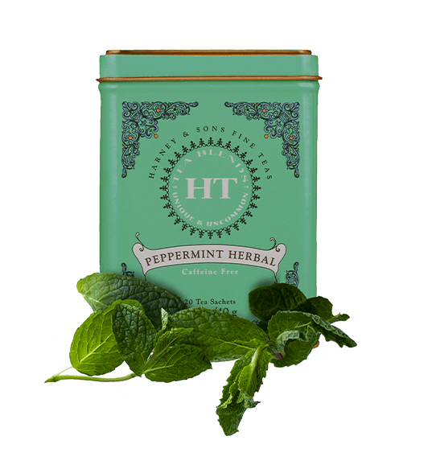
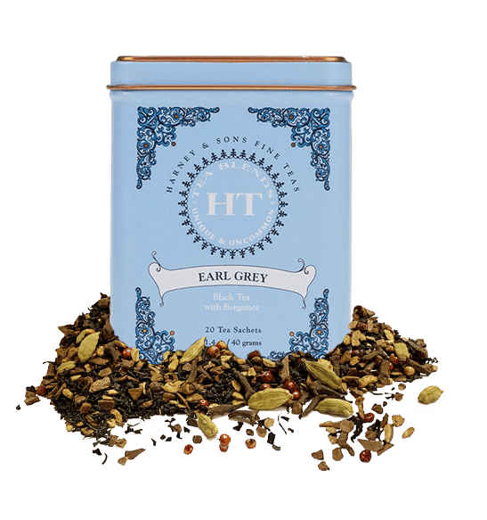

Find Your Best Brew
Peppermint Herbal
Briskness level: 1
Clean and refreshing peppermint flavors.
Body level: 1
Peppermint is light in body.
Aroma level: 5
A fresh minty aroma
Details
Its refreshing flavor and it can help calm an overly active stomach. It can be chilled and used during the hot months. Ours comes from Oregon, and is about the only tea or tisane that comes from the USA.
Green Tea With Coconut

Briskness level: 2
A Savory tea, that highlights notes of lemongrass and ginger.
Body level: 2
This flavored green tea has a moderate to light body.
Aroma level: 4
A Tropical getaway of an aroma with notes of coconut, ginger, and vanilla.
Details
It all comes together into a lovely tea. With our importation of coconut water, we get over to Bangkok at least once a year, and it is an amazing city. This confirms our opinion of choosing to honor the city and the cuisine of Thailand.
Winter White Earl Gray
Briskness level: 1
What makes this tea's flavors so good are the raw materials. Great white tea gives a nice foundation, and then the Oil of Bergamot soars with wonderful citrus flavors.
Body level: 2
Winter White Earl Grey has good body for a white tea and is very fulfilling.
Aroma level: 4
Like all of our Earl Greys, the citrus flavors of the Oil of Bergamot predominate. There are hints of the vegetal aromas of the white tea.
Details
The wonderful lemony aromas and flavors that come from our Oil of Bergamot. Winter White uses Mutan White, making it is lighter than traditional black teas. It has as its base the vegetal, and oh so lightly fruit flavors of Mutan White tea.